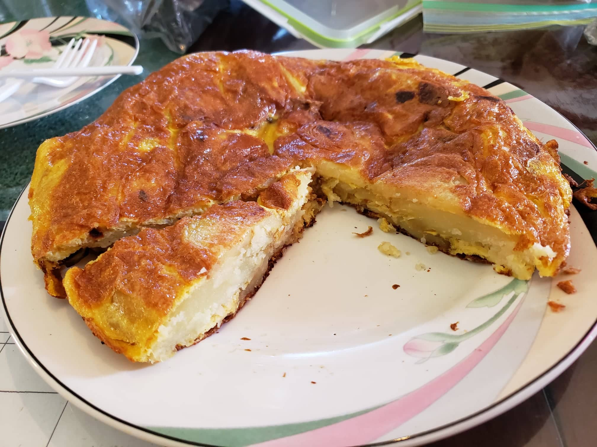

Tortilla de Papas

Ingredients:
- 2 lb Gold potatoes
- 2 1/2 cups Olive oil OR 2 tbsp Olive oil (if air-frying)
- 1 Onion, sliced
- 6 eggs
- Salt
Instructions:
- Using a mandolin, slice the potatoes into uniform thin slices.
- Add olive oil to a large skillet over medium heat. Add potato and onion; they should be mostly covered with olive oil. Season with salt. Cook on medium-high heat, maintaining a gentle boil, for 8-12 minutes, turning occasionally, until potatoes are just fork tender.
OR
Place potato and onion with 1-2 tbsp olive oil and salt to taste into an air-fryer preheated at 355 degrees. Air-fry for 30 minutes, tossing occasionally.
- Beat the eggs into a large bowl and season to taste. Once the vegetables are finished, add them into the bowl and toss.
- Add a little bit of oil to the bottom of a 10-inch non-stick skillet over high heat. Once hot, pour potato mixture into it and cook on high heat for 1 minute. Reduce heat to medium-low and cook for about 5 minutes.
- Run a rubber spatula along the outer edges of the tortilla to make sure it’s not sticking and to help it form its shape.
- Once it starts to firm up around the edges and in the center, place a large plate larger than the size of the pan over the pan and flip the omelette onto the plate.
- Slide the omelette back onto the pan. Use the spatula again to press the sides of the omelette in and under, to keep that rounded edge. Cook on high heat for 1 minute, and low heat for 2-3 more minutes or until done. It’s done when it feels set in the center and a knife or toothpick inserted into the center comes out clean.